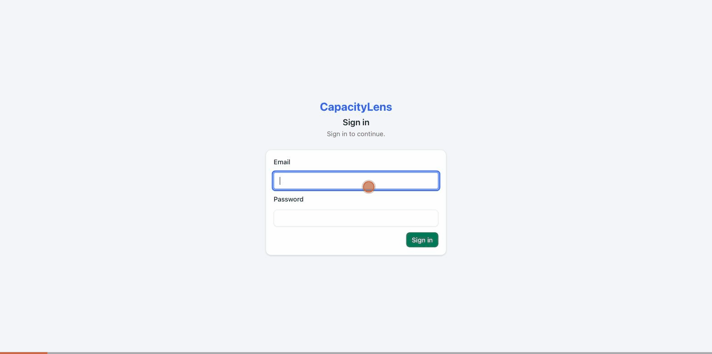
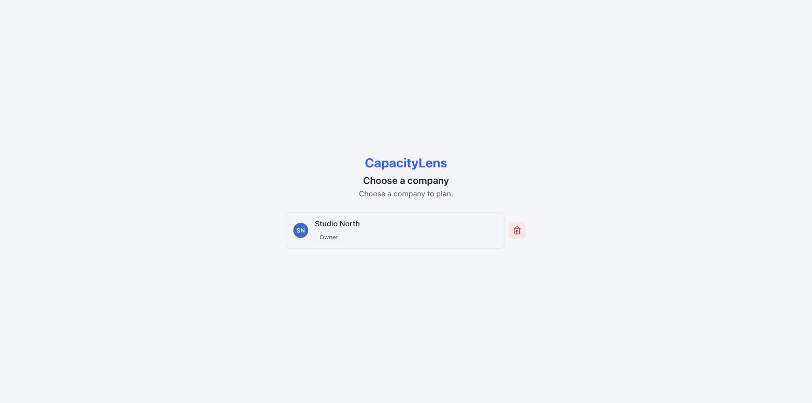
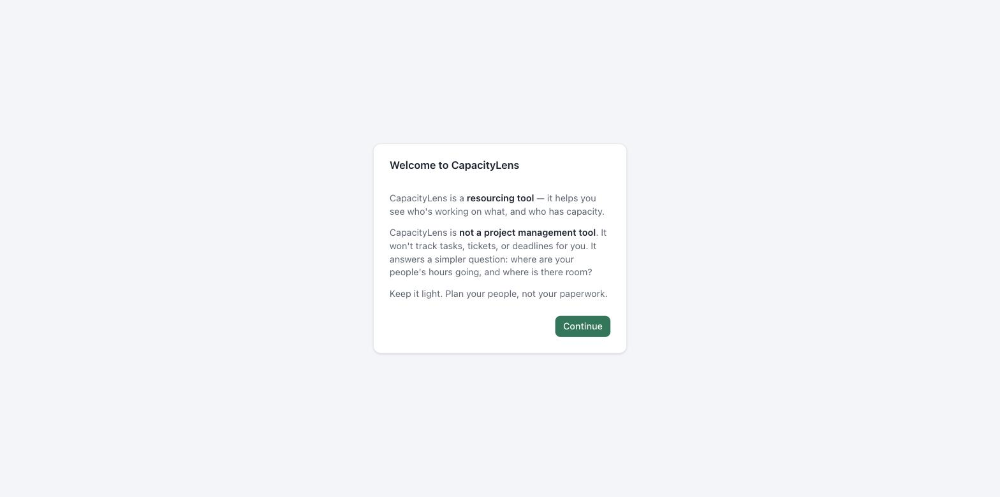
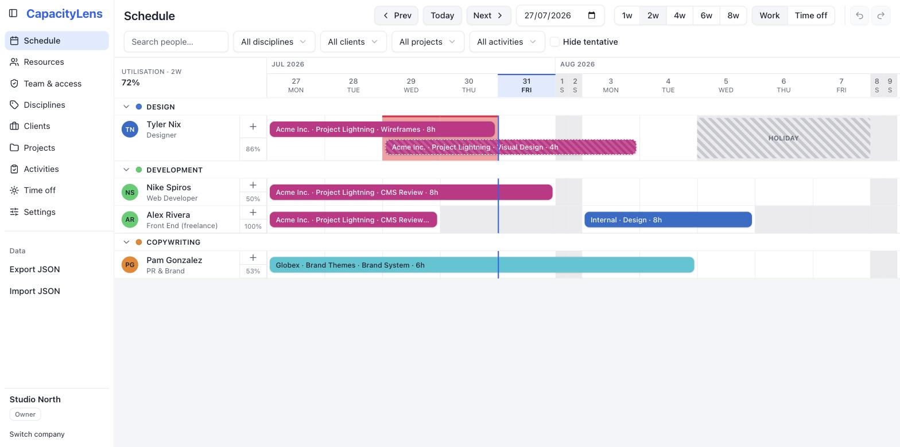
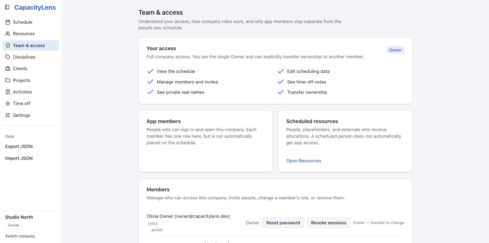

Demo it in 60 seconds.
Your agency planning in five minutes.
CapacityLens answers one question — who's busy, who's free, and when — without the enterprise setup that usually comes with it. Try it before reading another word:
corepack enable && pnpm install
pnpm run dev:demo # open http://127.0.0.1:5173In-memory sample agency, fully editable, no login, resets on refresh. Nothing is written to disk or browser storage.
{kind=link}

What you won't be configuring
If you've rolled out Float, Resource Guru or Harvest before, most of the setup pain lives in things CapacityLens deliberately doesn't have:
- No email server Invites are links you paste into Slack. No SMTP, no deliverability tickets.
- No user directory sync Four roles, one Owner, invite links. That's the whole IAM story (SSO is there if you want it).
- No timesheet setup CapacityLens plans capacity; it doesn't chase people for hours.
- No billing integration Self-hosted and open source. There is no seat counter.
- No mobile rollout It's a helicopter view for planning meetings, not another app to install on 40 phones.
- No per-user pricing anxiety Invite the whole studio. It's your server.
Three ways to run it
Demo
The command above. Sample data, no persistence, no login. Show it in your Monday meeting.
Open access
Real database, no logins — the default mode. Anyone who can reach the URL can view and edit. Fine behind a VPN or on a studio LAN.
Password auth
Login wall, one Owner, four roles, invite links. The walkthrough below. SSO/OIDC is the same model with your IdP on top — see authentication.md.
There is no default admin password. The credential-free demo is credential-free by design, and the dev-only bootstrap account (admin@admin.admin) is refused by production builds. The first real account is the one you create with your own setup token, below.
From checkout to planning your team
Four lines of config, then three screens. The timings are real, not marketing.
-
Fill in the .env ~2 min
Copy
.env.exampleto.envand set four values:SMALLSASS_ACCOUNT_MODE=password SMALLSASS_ACCOUNT_SECRET=<random 32+ chars> # session signing SMALLSASS_ACCOUNT_PUBLIC_URL=https://plan.example.com SMALLSASS_ACCOUNT_SETUP_TOKEN=<random 32+ chars> # claims the Owner seat, used onceStart it with Docker Compose or bare metal — both covered in self-hosting.md. SQLite is the database; there's nothing else to stand up.
-
Claim the Owner account ~30 sec
Visit your URL. With an empty database the login wall becomes a "create the owner account" form: name, email, password, and the setup token from your .env. The moment it succeeds, self-registration closes — nobody joins your instance without an invite. Every later visit is the plain sign-in:

The sign-in wall (shown once the Owner exists). -
Create your company ~10 sec
One field. Creating the company also creates its built-in "Internal" client and your Owner membership in the same step.

The company picker — one click and you're in. -
A 20-second orientation ~20 sec
Once per device, CapacityLens tells you what it is — and just as importantly, what it isn't:

"Plan your people, not your paperwork." -
You're planning done
The Schedule opens with a Getting Started panel: add clients, projects and people, then drag out allocations. No sample data is seeded in a real install — what you add is yours.

The Schedule — the who's-busy helicopter view the whole product is built around.
{kind=link}
{kind=link}
{kind=link}
Invites: paste a link, they're in
No invitation emails to configure, ever. You create a single-use link and send it wherever your team already talks. Your PM can be looking at the schedule before you've finished your coffee.
-
Pick a role on Team & access ~10 sec
Owners and Admins see an "Invite someone" panel. Choose the role — its consequences are spelled out in plain language underneath — and optionally pre-authorise an email address.

Team & access — your own access is explained at the top. -
Copy the one-time link ~5 sec
The link appears exactly once — the server keeps only a hash — so copy it and paste it to the person.

Invite created — copy it now, send it anywhere. -
They review, then join ~30 sec for them
The invite page shows your company, the proposed role, what it can and can't do, and the expiry — before anything happens. Existing users sign in and accept; new people create their account and accept in one step, landing straight on your schedule.

What your invitee sees. No surprises, no blind joins.
{kind=link}
Roles in one table
Four strictly nested roles — Viewer < Editor < Admin < Owner — with exactly one Owner per company. Everyone gets the same navigation; roles change what's editable and visible inside each page, enforced on the server, not just hidden in the UI.
| Capability | Viewer | Editor | Admin | Owner |
|---|---|---|---|---|
| See the schedule | ✓ | ✓ | ✓ | ✓ |
| Create / edit scheduling data | — | ✓ | ✓ | ✓ |
| See time-off notes | — | — | ✓ | ✓ |
| Manage members & invites | — | — | ✓ | ✓ |
| See private real names | — | — | — | ✓ |
| Import / delete company / transfer ownership | — | — | — | ✓ |
| Export | redacted | redacted | full | full |
Worth knowing: app members and scheduled resources are separate. Joining doesn't put someone on the schedule, and being on the schedule doesn't grant a login. Most agencies end up with a few members and many resources — you schedule freelancers and contractors without ever creating accounts for them.
After setupYour first week
- Day 1 — add your people. Resources, grouped by discipline. Placeholders are fine for roles you haven't hired yet.
- Day 2 — rough in this month. Clients, live projects, and honest-guess allocations. Tentative bars are a first-class feature; precision comes later.
- Friday — open it in your resourcing meeting. The whole product is built for this one moment: the who's-free-next-week question, answered from one screen instead of three spreadsheets and a Slack thread.
If it earns its place in that Friday meeting, invite the rest of the studio. If it doesn't, it's one directory and one SQLite file to delete — no offboarding, no export ransom.
Going deeper
self-hosting.md (Docker, upgrades, backups) · authentication.md (profiles, SSO) · onboarding-and-access.md (full role matrix and enforcement layers) · runbook.md (operations).